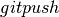

Development workflow¶
You already have your own forked copy of the CompMech repository, by following Making your own copy (fork) of CompMech, Set up your fork, you have configured git by following Git configuration, and have linked the upstream repository as explained in Linking your repository to the upstream repo.
What is described below is a recommended workflow with Git.
Basic workflow¶
In short:
Update your
masterbranch if it’s not up to date. Then start a new feature branch for each set of edits that you do. See below.Avoid putting new commits in your
masterbranch.Hack away! See below
Avoid merging other branches into your feature branch while you are working.
You can optionally rebase if really needed, see below.
When finished:
Contributors: push your feature branch to your own Github repo, and ask for code review or make a pull request.
Core developers (if you want to push changes without further review):
# First, either (i) rebase on upstream -- if you have only few commits git fetch upstream git rebase upstream/master # or, (ii) merge to upstream -- if you have many related commits git fetch upstream git merge --no-ff upstream/master # Recheck that what is there is sensible git log --oneline --graph git log -p upstream/master.. # Finally, push branch to upstream master git push upstream my-new-feature:master
See below.
Note
It’s usually a good idea to use the -n flag to git push
to check first that you’re about to push the changes you want to
the place you want.
This way of working helps to keep work well organized and the history as clear as possible.
Note
Do not use git pull — this avoids common mistakes if you are
new to Git. Instead, always do git fetch followed by git
rebase, git merge --ff-only or git merge --no-ff,
depending on what you intend.
See also
See discussions on linux git workflow, and ipython git workflow.
Making a new feature branch¶
To update your master branch, use:
git fetch upstream
git merge upstream/master --ff-only
To create a new branch and check it out, use:
git checkout -b my-new-feature upstream/master
Generally, you will want to keep this branch also on your public github fork
of CompMech. To do this, you git push this new branch up to your github
repo. Generally (if you followed the instructions in these pages, and
by default), git will have a link to your github repo, called
origin. You push up to your own repo on github with:
git push origin my-new-feature
In git >= 1.7 you can ensure that the link is correctly set by using the
--set-upstream option:
git push --set-upstream origin my-new-feature
From now on git will know that my-new-feature is related to the
my-new-feature branch in your own github repo.
The editing workflow¶
Overview¶
# hack hack
git add my_new_file
git commit -am 'ENH: some message'
# push the branch to your own Github repo
git push
In more detail¶
Make some changes
See which files have changed with
git status(see git status). You’ll see a listing like this one:# On branch my-new-feature # Changed but not updated: # (use "git add <file>..." to update what will be committed) # (use "git checkout -- <file>..." to discard changes in working directory) # # modified: README # # Untracked files: # (use "git add <file>..." to include in what will be committed) # # INSTALL no changes added to commit (use "git add" and/or "git commit -a")
Check what the actual changes are with
git diff(git diff).Add any new files to version control
git add new_file_name(see git add).To commit all modified files into the local copy of your repo,, do
git commit -am 'A commit message'. Note the-amoptions tocommit. Themflag just signals that you’re going to type a message on the command line. If you leave it out, an editor will open in which you can compose your commit message. For non-trivial commits this is often the better choice. Theaflag - you can just take on faith - or see why the -a flag? - and the helpful use-case description in the tangled working copy problem. The section on commit messages below might also be useful.To push the changes up to your forked repo on github, do a
git push(see ).
Writing the commit message¶
Commit messages should be clear and follow a few basic rules. Example:
ENH: add functionality X to compmech.<submodule>.
The first line of the commit message starts with a capitalized acronym
(options listed below) indicating what type of commit this is. Then a blank
line, then more text if needed. Lines shouldn't be longer than 80
characters. If the commit is related to a ticket, indicate that with
"See #3456", "See ticket 3456", "Closes #3456" or similar.
Describing the motivation for a change, the nature of a bug for bug fixes or
some details on what an enhancement does are also good to include in a commit
message. Messages should be understandable without looking at the code
changes. A commit message like MAINT: fixed another one is an example of
what not to do; the reader has to go look for context elsewhere.
Standard acronyms to start the commit message with are:
API: an (incompatible) API change
BLD: change related to building compmech
BUG: bug fix
DEP: deprecate something, or remove a deprecated object
DEV: development tool or utility
DOC: documentation
ENH: enhancement
MAINT: maintenance commit (refactoring, typos, etc.)
REV: revert an earlier commit
STY: style fix (whitespace, PEP8)
TST: addition or modification of tests
REL: related to releasing compmech
Rebasing on master¶
This updates your feature branch with changes from the upstream CompMech github repo. If you do not absolutely need to do this, try to avoid doing it, except perhaps when you are finished.
First, it can be useful to update your master branch:
# go to the master branch
git checkout master
# pull changes from github
git fetch upstream
# update the master branch
git rebase upstream/master
# push it to your Github repo
git push
Then, the feature branch:
# go to the feature branch
git checkout my-new-feature
# make a backup in case you mess up
git branch tmp my-new-feature
# rebase on master
git rebase master
If you have made changes to files that have changed also upstream, this may generate merge conflicts that you need to resolve. Finally, remove the backup branch once the rebase succeeded:
git branch -D tmp
Recovering from mess-ups¶
Sometimes, you mess up merges or rebases. Luckily, in Git it is relatively straightforward to recover from such mistakes.
If you mess up during a rebase:
git rebase --abort
If you notice you messed up after the rebase:
# reset branch back to the saved point
git reset --hard tmp
If you forgot to make a backup branch:
# look at the reflog of the branch
git reflog show my-feature-branch
8630830 my-feature-branch@{0}: commit: BUG: io: close file handles immediately
278dd2a my-feature-branch@{1}: rebase finished: refs/heads/my-feature-branch onto 11ee694744f2552d
26aa21a my-feature-branch@{2}: commit: BUG: lib: make seek_gzip_factory not leak gzip obj
...
# reset the branch to where it was before the botched rebase
git reset --hard my-feature-branch@{2}
If you didn’t actually mess up but there are merge conflicts, you need to resolve those. This can be one of the trickier things to get right. For a good description of how to do this, see http://git-scm.com/book/en/Git-Branching-Basic-Branching-and-Merging#Basic-Merge-Conflicts
Asking for your changes to be merged with the main repo¶
When you feel your work is finished, you can ask for code review, or directly file a pull request.
Asking for code review¶
Go to your repo URL - e.g.
http://github.com/your-user-name/compmech.Click on the Branch list button:

Click on the Compare button for your feature branch - here
my-new-feature:
If asked, select the base and comparison branch names you want to compare. Usually these will be
masterandmy-new-feature(where that is your feature branch name).At this point you should get a nice summary of the changes. Copy the URL for this, and send it to `CompMech mail`_, asking for review. The URL will look something like:
http://github.com/your-user-name/compmech/compare/master...my-new-feature.There’s an example at http://github.com/matthew-brett/nipy/compare/master...find-install-data See: http://github.com/blog/612-introducing-github-compare-view for more detail.
The generated comparison, is between your feature branch
my-new-feature, and the place in master from which you branched
my-new-feature. In other words, you can keep updating master
without interfering with the output from the comparison. More detail?
Note the three dots in the URL above (master...my-new-feature) and
see Two and three dots in difference specs.
Filing a pull request¶
When you are ready to ask for the merge of your code:
Go to the URL of your forked repo, say
http://github.com/your-user-name/compmech.git.Click on the ‘Pull request’ button:

Enter a message; we suggest you select only
CompMechas the recipient. The message will go to the CompMech core developers. Please feel free to add others from the list as you like.
Pushing changes to the main repo¶
When you have a set of “ready” changes in a feature branch ready for
Numpy’s master or maintenance/1.5.x branches, you can push
them to upstream as follows:
First, merge or rebase on the target branch.
Only a few commits: prefer rebasing:
git fetch upstream git rebase upstream/master
See above.
Many related commits: consider creating a merge commit:
git fetch upstream git merge --no-ff upstream/master
Check that what you are going to push looks sensible:
git log -p upstream/master.. git log --oneline --graph
Push to upstream:
git push upstream my-feature-branch:master
Note
Avoid using git pull here.
Additional things you might want to do¶
Rewriting commit history¶
Note
Do this only for your own feature branches.
There’s an embarrassing typo in a commit you made? Or perhaps the you made several false starts you would like the posterity not to see.
This can be done via interactive rebasing.
Suppose that the commit history looks like this:
git log --oneline
eadc391 Fix some remaining bugs
a815645 Modify it so that it works
2dec1ac Fix a few bugs + disable
13d7934 First implementation
6ad92e5 * masked is now an instance of a new object, MaskedConstant
29001ed Add pre-nep for a copule of structured_array_extensions.
...
and 6ad92e5 is the last commit in the master branch. Suppose we
want to make the following changes:
- Rewrite the commit message for
13d7934to something more sensible. - Combine the commits
2dec1ac,a815645,eadc391into a single one.
We do as follows:
# make a backup of the current state
git branch tmp HEAD
# interactive rebase
git rebase -i 6ad92e5
This will open an editor with the following text in it:
pick 13d7934 First implementation
pick 2dec1ac Fix a few bugs + disable
pick a815645 Modify it so that it works
pick eadc391 Fix some remaining bugs
# Rebase 6ad92e5..eadc391 onto 6ad92e5
#
# Commands:
# p, pick = use commit
# r, reword = use commit, but edit the commit message
# e, edit = use commit, but stop for amending
# s, squash = use commit, but meld into previous commit
# f, fixup = like "squash", but discard this commit's log message
#
# If you remove a line here THAT COMMIT WILL BE LOST.
# However, if you remove everything, the rebase will be aborted.
#
To achieve what we want, we will make the following changes to it:
r 13d7934 First implementation
pick 2dec1ac Fix a few bugs + disable
f a815645 Modify it so that it works
f eadc391 Fix some remaining bugs
This means that (i) we want to edit the commit message for
13d7934, and (ii) collapse the last three commits into one. Now we
save and quit the editor.
Git will then immediately bring up an editor for editing the commit message. After revising it, we get the output:
[detached HEAD 721fc64] FOO: First implementation
2 files changed, 199 insertions(+), 66 deletions(-)
[detached HEAD 0f22701] Fix a few bugs + disable
1 files changed, 79 insertions(+), 61 deletions(-)
Successfully rebased and updated refs/heads/my-feature-branch.
and the history looks now like this:
0f22701 Fix a few bugs + disable
721fc64 ENH: Sophisticated feature
6ad92e5 * masked is now an instance of a new object, MaskedConstant
If it went wrong, recovery is again possible as explained above.
Deleting a branch on github¶
git checkout master
# delete branch locally
git branch -D my-unwanted-branch
# delete branch on github
git push origin :my-unwanted-branch
(Note the colon : before test-branch. See also:
http://github.com/guides/remove-a-remote-branch
Several people sharing a single repository¶
If you want to work on some stuff with other people, where you are all committing into the same repository, or even the same branch, then just share it via github.
First fork CompMech into your account, as from Making your own copy (fork) of CompMech.
Then, go to your forked repository github page, say
http://github.com/your-user-name/compmech
Click on the ‘Admin’ button, and add anyone else to the repo as a collaborator:
Now all those people can do:
git clone git@githhub.com:your-user-name/compmech.git
Remember that links starting with git@ use the ssh protocol and are
read-write; links starting with git:// are read-only.
Your collaborators can then commit directly into that repo with the usual:
git commit -am 'ENH - much better code'
git push origin master # pushes directly into your repo
Exploring your repository¶
To see a graphical representation of the repository branches and commits:
gitk --all
To see a linear list of commits for this branch:
git log
You can also look at the network graph visualizer for your github repo.
Backporting¶
Backporting is the process of copying new feature/fixes committed in
`compmech/master`_ back to stable release branches. To do this you make a
branch off the branch you are backporting to, cherry pick the commits you
want from compmech/master, and then submit a pull request for the
branch containing the backport.
Assuming you already have a fork of CompMech on Github. We need to update it from upstream:
# Add upstream. git remote add upstream https://github.com/compmech/compmech.git # Get the latest updates. git fetch upstream # Make sure you are on master. git checkout master # Apply the updates locally. git rebase upstream/master # Push the updated code to your github repo. git push origin
Next you need to make the branch you will work on. This needs to be based on the older version of CompMech (not master):
# Make a new branch based on compmech/maintenance/1.8.x, # backport-3324 is our new name for the branch. git checkout -b backport-3324 upstream/maintenance/1.8.x
Now you need to apply the changes from master to this branch using git cherry-pick:
# This pull request included commits aa7a047 to c098283 (inclusive) # so you use the .. syntax (for a range of commits), the ^ makes the # range inclusive. git cherry-pick aa7a047^..c098283 ... # Fix any conflicts, then if needed: git cherry-pick --continue
You might run into some conflicts cherry picking here. These are resolved the same way as merge/rebase conflicts. Except here you can use git blame to see the difference between master and the backported branch to make sure nothing gets screwed up.
Push the new branch to your Github repository:
git push -u origin backport-3324
Finally make a pull request using Github. Make sure it is against the maintenance branch and not master, Github will usually suggest you make the pull request against master.